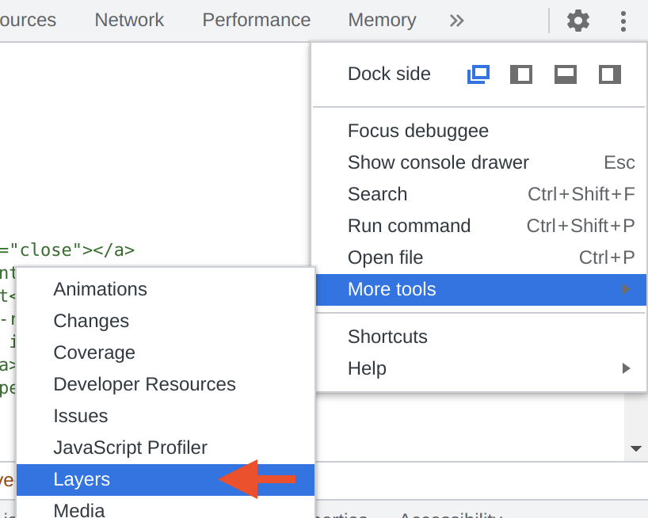
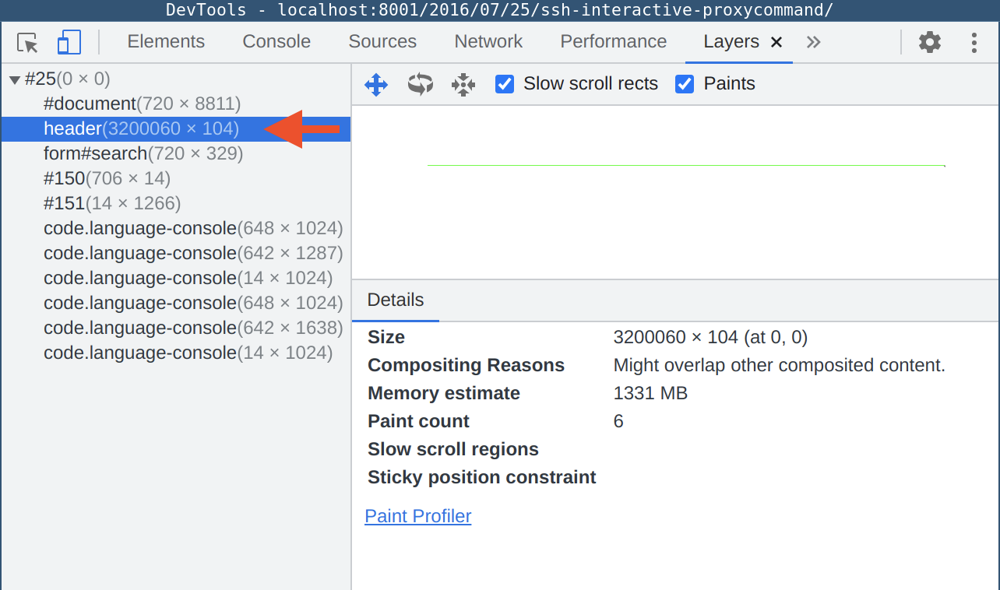
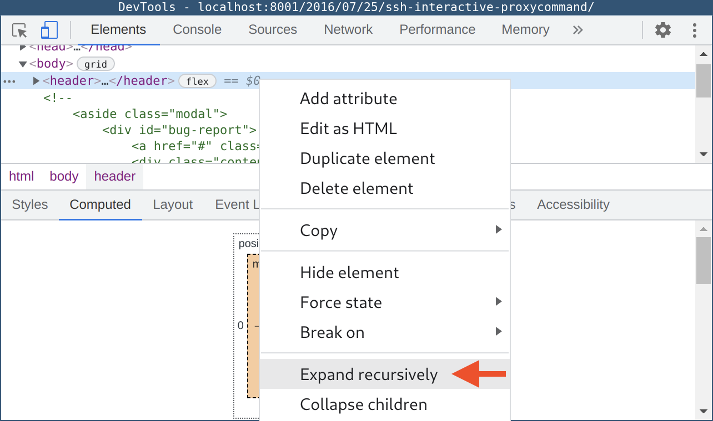
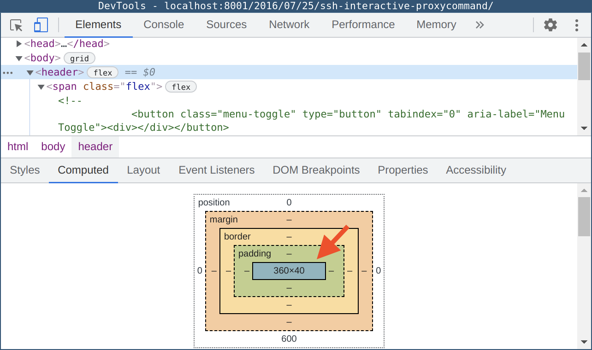
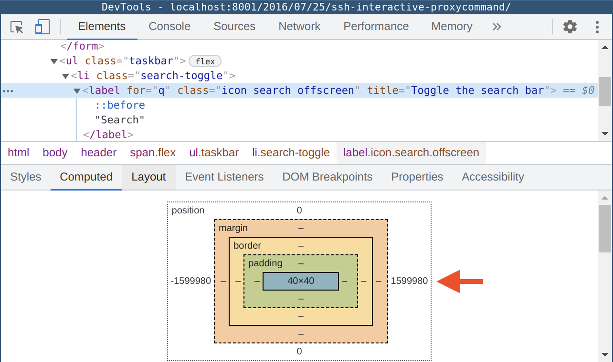
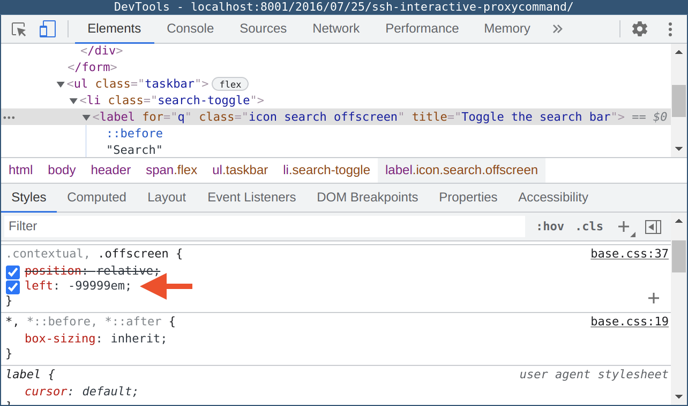

Fixing "Content wider than screen"
Recently, I started to get notifications from my Google Search Console that some pages have their content wider than screen and that impacts Mobile Usability. However, when I went to the affected pages and performed a test through “TEST LIVE PAGE” no Mobile Usability issues were found. Yet, the re-validation requests through Google Search Console were returning the error again and again.
I searched for possible root cause and suggested fixes on forums, but did not find any satisfactory approaches for investigating and fixing the issue. Below, is my process of hunting the root cause down, which resulted in resolving the issue of “Content wider than screen” in my Google Search Console.
Let me start by saying that the website the error was reported against does not have any visual issues on mobile devices: it renders fine, achieves 90+ in PageSpeed Insights, and, overall, is very standards aligned.
So, how one can find what Google Search does not like about their seemingly perfect website? In this particular case, I found Chrome DevTools to be an invaluable tool to investigate the issue, specifically its insight into how layers are composed. To open the DevTools one need to simply right-click anywhere on the page they are about to analyse and choose the “Inspect” item at the bottom of the context menu. Once we are inside the DevTools window, we need to the mobile view (by clicking on the “Toggle device toolbar” icon in the upper left corner of the DevTools window – all in all, we are investigating the Mobile Usability issue.
 If you never used the Layers view of DevTools before, you can find that view by clicking on three vertical dots in the upper right corner of the DevTools window, then expand the “More tools” sub-menu, and select “Layers”. This will switch your DevTools to a view representing how different layers are rendered by the web-browser engine. The view is usually split in three distinctive panes: the layer hierarchy, the visual representation of layers, and the details pane for the currently selected layer. Depending on whether you have the WebGL support or not, the representation of layers may be unavailable. If it is unavailable, it would be a bit inconvenient, but not a big issue, since our primary working horse is the layer hierarchy pane.

We should start with expanding the top level layer container and check the
dimensions next to the first child, which is #document. In my example, the
#document layer has the size of 720 by 8811 pixels. These dimensions
represent the size of the viewport (assuming that your website visually fits
into the mobile view with no horizontal scroll bars). Looking at my example,
we can immediately see an issue with the rendering: instead of a rectangle
representing our page we only see a single line across the pane. The pane is
using auto scaling to fit all rendered layers inside the pane. This means that
some element (or elements) in out page are so wide or rendered so far away from
the primary content that to represent all the layers Chrome needed to scale it
down significantly.

Now that we know what is wrong with the page, how do we locate the offending
element(s)? First, we need to look at other layers in the layer hierarchy
pane: any layer that is bigger horizontally (or vertically) than our
#document layer is the likely suspect for triggering the Mobile Usability
error of content being wider than screen. In my case, the header layer is
extremely wide: 3200060 pixels wide, to be exact – so, something inside the
header container is responsible for this. It is time to switch to the Elements
view of DevTools and interrogate the DOM tree. To make the search easier, once
I located the header container, I recursively expanded all children of that
container.
 This allows me to select the topmost container (in my case, it is “header”), select “Computed” tab to see the position and dimensions of the selected element, and then by pressing the down arrow key on my keyboard walk the tree until I find the offending element. We start with the “header” element and, as you can see from the screenshot, its dimensions are reasonable and are smaller than the dimensions of the “body” element which represents our document.
 Basically, any child element of the “body” container should be equal or smaller than the dimensions of the “body” container. In some extreme cases, it would require one to do some tedious maths each time you move down the tree, but in most cases skimming through will reveal a standout element like the label element I stumbled upon.

Despite that the size of this label element is just 40 by 40 pixels, its
position is way to the left (by 1599980 pixels, to be precise). To understand
why this element behaves like this we need to switch to the “Styles” tab to
look at the associated CSS rules for the offending element. Sure enough, after
a bit of reading through the styles, I located the corresponding rule that was
pushing the element to the far left side of the universe.
Once you find the offending element, you need to understand why it was
implemented like that and what goal was pursued by the author. When this is
clear, you should be able to come up with an appropriate fix addressing the
Mobile Usability issue while preserving the intended behaviour of the element.
In my case, the author was me and this particular element was part of the UI.
Since my website is responsive and tries to cater for different audiences
(including people who are using screen readers), I needed to hide some text
from the visual audiences (they are fine with icons) and present textual label
to people who are using assistive technology like screen readers.
Unfortunately, I followed one of the articles I found on the web, which
suggested to hide elements by pushing them off the screen. Therefore, my fix
in this instance was to cut the overflowing label off using overflow: hidden
and white-space: nowrap. I also used opacity: 0 for the “contextual” class,
which was used by some static, non-interactive elements on the page.
I hope this small tutorial helped you to hunt down the source of your Google Search Console errors related to the content being outside the viewport.